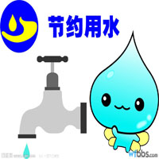
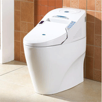
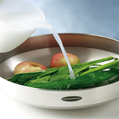

|  | 采用节水器具有条件的家庭应更换节水型卫生器具，建议大家安装使用节水型用水器具或卫生洁具，采用陶瓷芯片密封式水嘴，淘汰螺旋升降式铁水嘴，改造9升以上的便器水箱，采用不大于6升的便器水箱。对现有在用的非节水型抽水马桶，可尝试采用水箱内放置一块砖头、一个盐水瓶的方式来减少冲洗水量。 家庭节约小敲门家庭用水要尽量做到串联使用，一水多用例如：淘米水可以用来洗菜，同时有利于去除蔬菜表面农药，洗菜水亦可用于冲厕；洗澡水、洗衣水、洗脸(脚)水可以用来拖地，亦可用于冲厕。 提倡一户一表，减小表后管网的漏失率。在水压较高的地区，居民不妨采用调整自来水阀门的办法来控制水压，这样便可节约相当的水量。 切勿长时间开水龙头洗手、洗衣或洗菜。洗涤蔬菜水果时应控制水龙头流量，改常流水冲洗为间断冲洗。 及时修理滴漏的水龙头和其他用水器具，滴漏的水龙头每天可耗水70升。 百姓建议：采用节水器具能有效节水 |
 |
|  |  |
水资源介绍